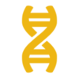

Марвел:битва чемпионов/Marvel:contest of champions
Топ 15 лучших чемпионов: биография, способности
Биография: Проффесор Икс верил, что мутанты и люди могут мирно сосуществовать, пока Мойра Мактагерт не показала ему, что мутанты падут, если проффесор не изменит их путь. Под новым именем "Икс", он отказался от старых стремлений. Мутанаты больше не могут терпеть предрассудки и скорби людей. И былы основана Кракоа, государство, которым правит Икс. И те, кто противостоит мутантам, узрят полную мощь разума проффесора Икс
Способности: Потенциально самый сильный дамагер в игре, но с экстремальным разгоном. Освоив его, вы увернно сможете контролировать весь бой, сокрушая сложнейших соперников. Контроль над спец. атаками, промахами, уклонениями сильно расширяют его потенциал
Урон: 5| Выживаемость: 3| Разгон: 2| Контроль: 4
Биография: Во время холодной войны Советский Союз превратил Аркадия Россовича в супер солдата по имени красный Омега. Вооруженный смертоносными щупальцами и аурой смерти, способной убивать одним присутствием, Крансый Омега вышел из под контроля. Его создатели активировали Криостазис, в котором он и прибывал, пока преступная организация "Рука" не разбудила его для борьбы с Росомахой и людьми икс
Способности: Весомая регенерация, внушительный прямой урон, игнорирование шипов, иммунитет к кровотечениям и отравлениям-такого идеального сочетания актуальных способностей нет ни у кого, но цена всего этого-сложный геймплей за Омегу
Урон: 5| Выживаемость: 5| Разгон: 2| Контроль: 3
Биография: Петр Распутин был сыном русских земледельцев, широкоплечим и сильным духом. Когда его способности мутанта проявились, его тело было заключено в оболочку из живой стали, и он стал одним из самых могущественных героев вселенной Marvel. Петр переехал в Америку, чтобы присоединиться к Людям Икс, будучи сердцем и совестью команды.
Способности: Иммунитет к крови, похолоданию, испепелению, пробитию брони. При все при этом, простой персонаж без закрученых механик и широким спектром приминения
Урон: 5| Выживаемость: 5| Разгон: 4| Контроль: 1
Биография:Младенец, брошенный в космос, Гиперион был единственным выжившим из умирающей расы в умирающем мире. Он упал на Землю и был найден человеком, назвавшим себя Отцом. Отец учил его правильному в неправильном, добру в зле, прививая ему набор моральных принципов, которые побудили его использовать свои невероятные силы в качестве заклятого защитника нашего мира.
Способности: Наличие множества усилений и ослаблений при очень внушительном уроне. Различные способы ведения боя, в том числе и бесконтактного, также возможно, и многого стоит
Урон: 5| Выживаемость: 4| Разгон: 4| Контроль: 2
Биография:Магнето, мастер магнетизма, - один из самых могущественных и культовых мутантов на Земле. В роли Макса Эйзенхардта он испытал неописуемые зверства. Как Магнето, он отправлялся в крестовый поход за права мутантов - часто любой ценой. Он управляет силами магнетизма, создавая силовые болты или манипулируя металлом по своему желанию. Иногда чемпион, иногда фанатик, Магнето дрался с Людьми Икс так же часто, как и против них.
Способности: Магнето хоть и эффективен только против металлических соперников, но, если учеть количество металлических персонажей в игре и то, как быстро и красиво Магнето их уничтожает делает его абсолютно незаменимым в вашей команде
Урон: 5| Выживаемость: 4| Разгон: 3| Контроль: 4
Биография:Вспыльчивый Джонни Шторм был одним из четырех человек, попавших в аварию в космическом полете, в результате которой возникла Фантастическая четверка. После того, как их корабль был залит космической радиацией, Джонни получил способность создавать и контролировать огонь. Помимо создания мощных вспышек пламени, он может окутывать свое тело плазмой, давая ему способность летать. Теперь, получив прозвище «Человек-Факел», он и остальная часть Фантастической четверки берут на себя защиту мирных граждан. Огонь!
Способности: Сильная сторона Факела- испепеления от обычных ударов, они полностью реверсируют регенерацию и обходят броню соперника, нанося при этом хороший урон, потенциально разгоняемый до невероятных цифр
Урон: 4| Выживаемость: 4| Разгон: 4| Контроль: 4
Биография:Этот щеголеватый маленький парень был обыкновенной обезьяной, пока его племя не предоставило убежище беглому убийце. Пришли наемники и убили как убийцу, так и остальных членов племени Hit-Monkey! Итак, Hit-Monkey взял оружие павшего убийцы и поклялся отомстить как виновным, так и всем, кто называет себя наемниками.
Способности: Гарантированные криты, сбрасование негативных эффектов, блокирование уклонений-типичный набор чемпионов класса способностей. Но только 3 персонажа в этом классе особо запомнились большинству игроков. Хит-Манки один из них. Простой персонаж с понятной техникой боя
Урон: 5| Выживаемость: 3| Разгон: 5| Контроль: 4
Биография: После того, как он выступил против Соковийских соглашений, суперсолдат потерял свой щит и был вынужден уйти в подполье. Но с помощью старых и новых друзей ему удалось переоборудовать и остаться незамеченным; при этом продолжая делать то, что он считает правильным - спасать мир по одной тайной миссии за раз.
Способности: Настолько обширным набором способностей может похвастаться далеко не каждый. Помимо очень удобного реверсирования регенерации и энергии, сбрасывания дебафов, Кэп способен усиливать и других чемпионов, и что важно, это зависит от класса и распространяется на всех персонажей соответственно. Это и называется универсальность.
Урон: 4| Выживаемость: 5| Разгон: 4| Контроль: 4
Биография: Известный в Мире битвы как могущественный лидер и искусный тактик, Ник Фьюри - закаленный ветеран боевых искусств, владеющий различными боевыми искусствами, включая черный пояс по тхэквондо. Ник также имеет доступ к арсеналу смертоносного оружия, разработанного S.H.I.E.L.D. и мастер шпионажа, всегда готовый сразиться в случае возникновения опасной ситуации.
Способности: Невероятно мощные кровотечения с обычных ударов, стабильно высокие и частые критические удары, полное игнорирование уклонений, промахов и блока. 40% снижение точностей способностей. При таком наборе навыков, вы уверенно сможете выходить победителем из большинства боев
Урон: 5| Выживаемость: 2| Разгон: 5| Контроль: 5
Биография: В будущем мире 2099 года корпорация Alchemax приобретает «La fleur du mal», древний демонический меч из рода Гильотин. Используя технологии будущего и корпоративное мистическое искусство, они реконструируют демонические силы, населяющие меч, создавая новое оружие, способное «оцифровывать» человеческие души. Гильотина 2099, созданная из нечестивой смеси передовых технологий и древней темной магии, была разработана как образец армии вооруженных мечами роботов-воинов.
Способности: Отсутствие критических ударов и потенциально самый большой прямой урон в игре и все это при наличии большого количества иммунитетов и наличие регенерации-делают Гильотину 2099 уникальным персонажем. Обязательна к прокачке, учитывая, что альтернатива ей всего одна.
Урон: 5| Выживаемость: 5| Разгон: 4| Контроль: 4
Биография: Рожденный в расе пацифистов, вынужденных в рабство Мастером первого Состязания Чемпионов, Эйгон всегда игнорировал строгий кодекс ненасилия среди своих родственников. Он тайно тренировался как гладиатор, вдохновленный любовью и долгом, чтобы выиграть Соревнование и освободить свой народ. Несмотря ни на что, он пробился к финальной битве против Мастера. Эйгон победил, но смерть Мастера вызвала взрыв, отнявший руку Эйгона и жизнь его возлюбленной. Его трагедия завершилась, когда его собственный народ изгнал его как изгоя и бросил в Царстве битвы. Как Чемпион Соревнования, Эйгон получил призом Изо-Пояс, могущественный артефакт, который дает ему способность проявлять фантомную конечность и другие конструкции силы воли для замены отсутствующей руки. Тем не менее, полная мощность пояса до сих пор неизвестна.
Способности: Первый случай, когда проще сказать, чего персонаж не умеет(блокирование промахов).Самый сложны контент в игре-всего лишь разминка для Эйгона.Но почему не топ 1? Из-за его разгона. Чтобы получить максимальный дамаг от Эйгона-нужен максимальный уровень короной способности, умение держать комбо, агрессивная игра. Но не смотря на это, люди используют его и всегда рады, если он выпадает
Урон: 5| Выживаемость: 5| Разгон: 2| Контроль: 5
Биография Космического призрачного гонщика: Когда земля сражалась с Таносом, каратель, Френк Касл, был убит. Он убивал всю жизнь, поэтому отправился в ад, где аключил сделку с Мефисто и стал новым Призрачным гонщиком. Когда он вернулся на землю, все было мертво, а Танос исчез. Прошло много лет, и КПГ нашел Галактус, который сделал его Глашатаем в обмен на поглощение земли. И так он стал КПГ и глашатаем Галактуса
Биография Корвуса Глейва: Корвус Глейв - правая рука Таноса и хитрый, хитрый лейтенант его армии. Единственное, что опаснее, чем тактический ум этого опытного стратега, - это алебарда, которой он владеет, чтобы быстро рассечь своих врагов.
Способности: Два персонажа, чей урон выходит за пределы любой нормы. Если с Корвусом-это огромный урон за короткий промежуток времени, то с КПГ-это полное разрушение игрового баланса
Урон: 5| Выживаемость: 4| Разгон: 5| Контроль: 5
Урон: 5| Выживаемость: 5| Разгон: 5| Контроль: 4
Биография:Привет! Сущность именуется Уорлоком. Сущность способна к различным действиям, в том числе изменению формы и шуткам. Трансмод вирус нужен для передачи жизеной энергии противнику. Сущность не повредит никому. Уморительная дезинформация! Любой, кто повредит сущности или друзьям сущности будет повержен.
Способности: Не самый дамажный персонаж, что для многих стоит на 1 месте, но при этом имеет место в вашей команде порой чаще безжалостных разрушителей. Все способности Уорлока работают пассивно(иммунитеты; реверсирования: регенерации, энергии; блокирования способностей). Все это дает по итогу персонажа, способного обходить самые омерзительные комбинации усилений.
Урон: 4| Выживаемость: 5| Разгон: 5| Контроль: 5
Биография Доктора Дума: Покинув свое племя в Латверии, Виктор фон Дум переехал в Соединенные Штаты, чтобы учиться в Университете Эмпайр-стейт, где он объединил колдовство и технологии для создания фантастических изобретений. Несмотря на предупреждения одноклассника Рида Ричардса, одно из его изобретений вышло из строя, что привело к взрыву, серьезно повредившему его лицо. Изгнанный после инцидента, Виктор начал путешествовать по миру, в конце концов обессилев, рухнув на тибетский горный склон, где его спас клан монахов. Овладев их дисциплиной и выковав себе доспехи, Виктор взял на себя мантию Доктора Дума, его миссия - отомстить тем, кого он считает ответственными за свою аварию.
Биография Клэр Войант: Клэр Войант была духовным медиумом, общавшимся с мертвыми сверхъестественными средствами. Убитый клиентом во время неудачной работы, Воянт отправляется в ад, где сатана дает ей возможность убивать одним прикосновением, отправляя ее обратно на Землю, чтобы отомстить за собственную смерть. Отомстив за ее убийство, Войант возвращается к Сатане, который, больше не желая ждать, пока злые души умрут естественной смертью, просит ее о том, чтобы принести ему больше душ.
Способности: Их основные способности полностью работают пассивно, невероятный уровень выживаемости, совершенный контроль над боем, наличие основных иммунитетов, высокий прямой урон. Это общие навыки двух топовых персонажей класса мистики.Определить кто из них первый практически невозможно
Урон: 4| Выживаемость: 5| Разгон: 5| Контроль: 5
Урон: 4| Выживаемость: 5| Разгон: 5| Контроль: 5
Биография: Вы не можете бороться с тем, чего не знаете, и, кажется, никто ничего не знает о том, кто такая Призрак и как она может делать то, что умеет. В преступном мире ее боятся и восхищаются за ее способность проходить сквозь твердые стены, истинные намерения Призрака столь же неуловимы, как и она сама, хотя одно можно сказать наверняка: она заинтересована в том, чтобы заполучить все Pym Tech, которые она может найти. Ее передовые технологии в сочетании с боевыми навыками делают ее силой, с которой нужно считаться.
Способности: Не оспоримый топ игры. Уникальная способность фазирования(невидимости), которое позволяет вам вести полностью подконтрольный бой, не теряя здоровья. Гарантированные и легко разгоняемые криты. Очень мощные синергии, облегчивающие игру в разы.
Урон: 5| Выживаемость: 5| Разгон: 5| Контроль: 5